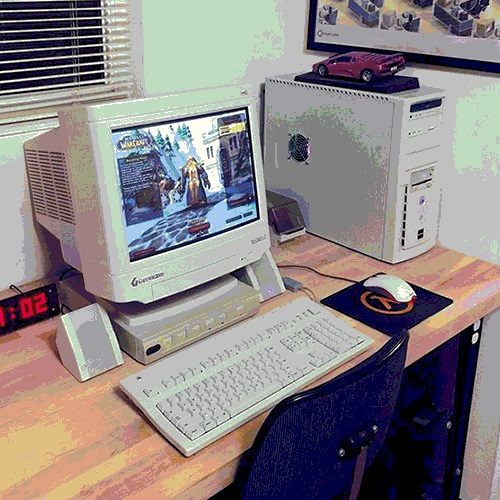

As someone who enjoys tinkering with technology. I usually have one or two projects that relate to my desktop PC. My current project is with creating a sleeper build, a PC built using high-end internal parts that is housed in an unassuming case. The case I am currently using was found during last Fall's UC Davis E-waste recycling event. I was lucky enough to find a matching monitor for the case as well! You can see my complete desktop setup in the picture above! In the near future I hope to upgrade my 1080 FTW GPU to Nvdia's new 3080 series. I also hope to upgrade my PSU to a fully modular unit, but unfortunatly there seems to be a shortage among sellers :(. On occassion, I build older PCs using the best parts on hand. This summer I managed to get my Windows 98 build up and running; I usually play Roller Coaster Tycoon on it.